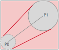

Author: Charles Zhu
Summary: 动画学习
前言
偶然发现iPhone QQ 显示消息条数的小红点可以响应动作事件，也有人问我这样的动画该怎么做，这里就把实现的思路简单的描述一下。在实现的过程中，同样发现该功能并没有看到的那么简单，要做一个完备的动画效果需要有一定的功底。因此，本篇会先侧重于实现思路，并不会实现一个一模一样的效果。
下面是iPhone QQ小红点的动作交互效果：

分析
首先我们分析拖拽时候的表现：
- 原先的小红点顺着手指移动，并与原来所处位置通过一个小尾巴(即移动的轨迹)连接
- 与原先位置在一定范围内时，小尾巴出现；超过一定范围时，小尾巴不出现
- 释放手指，小红点回到原先位置，并有弹簧动画效果
- 释放手指时离原先位置超过一定范围则不返回原点，而是有消失的泡沫动画
抛开细节，抓住要点，我归纳了几个要点：
- 小原点随手指移动
- 小尾巴分情况出现
- 手指释放后，小红点弹回原先位置
除此之外，红点上的文字，消失等情形的处理不是主要问题，我们先缓一缓。
实现
红点的移动
首先实现一个圆形的view，并且可以随手指移动。在一定移动范围内，手指离开后，view返回原处并带有弹簧效果；超出范围，view则停留在手指离开处。
我们通过drawRect:来画一个圆；设置一个CGPoint的对象来记录开始触摸时的位置；接着就是实现相关的touchEvent:。因为都是很基本的内容，直接上代码。
//头文件
@interface ZZSpringView : UIView
- (instancetype)initWithSquareLength:(CGFloat)length originPoint:(CGPoint)oPoint;
@end
//类文件
const CGFloat kOffset = 100.0;//拖拽的范围限制
@interface ZZSpringView ()
{
CGPoint pointOriginCenter;
}
@end
@implementation ZZSpringView
- (instancetype)initWithFrame:(CGRect)frame
{
if (self = [super initWithFrame:frame])
{
pointOriginCenter = self.center;
self.backgroundColor = [UIColor clearColor];
}
return self;
}
- (instancetype)initWithSquareLength:(CGFloat)length originPoint:(CGPoint)oPoint
{
if (self = [self initWithFrame:CGRectMake(oPoint.x, oPoint.y, length, length)])
{
}
return self;
}
// Only override drawRect: if you perform custom drawing.
// An empty implementation adversely affects performance during animation.
- (void)drawRect:(CGRect)rect {
// Drawing code
CGContextRef context = UIGraphicsGetCurrentContext();
CGContextSetAllowsAntialiasing(context, true);
CGContextSetShouldAntialias(context, true);
CGContextAddEllipseInRect(context, rect);
CGContextSetFillColorWithColor(context, [UIColor redColor].CGColor);
CGContextFillPath(context);
}
- (BOOL)_isDistanceEnough:(CGPoint)point
{
CGFloat distance = (point.x - pointOriginCenter.x)*(point.x - pointOriginCenter.x) + (point.y - pointOriginCenter.y)*(point.y - pointOriginCenter.y);
if (distance > kOffset * kOffset)
{
return YES;
}
return NO;
}
//touch event
- (void)touchesBegan:(NSSet *)touches withEvent:(UIEvent *)event
{
UITouch *touch = [touches anyObject];
pointOriginCenter = [touch locationInView:self.superview];
[UIView animateWithDuration:.3 animations:^{
self.center = pointOriginCenter;
}];
}
- (void)touchesCancelled:(NSSet *)touches withEvent:(UIEvent *)event
{
}
- (void)touchesMoved:(NSSet *)touches withEvent:(UIEvent *)event
{
UITouch *touch = [touches anyObject];
CGPoint pointMove = [touch locationInView:self.superview];
self.center = pointMove;
}
- (void)touchesEnded:(NSSet *)touches withEvent:(UIEvent *)event
{
UITouch *touch = [touches anyObject];
CGPoint pointEnd = [touch locationInView:self.superview];
CGFloat distance = (pointEnd.x - pointOriginCenter.x)*(pointEnd.x - pointOriginCenter.x) + (pointEnd.y - pointOriginCenter.y)*(pointEnd.y - pointOriginCenter.y);
if ([self _isDistanceEnough:pointEnd])
{
//may be destory self animation
self.center = pointEnd;
pointOriginCenter = self.center;
}
else
{
[UIView animateWithDuration:1.0
delay:.0
usingSpringWithDamping:0.1
initialSpringVelocity:.0
options:0
animations:^{
self.center = pointOriginCenter;
}
completion:^(BOOL finished) {
}];
}
}
在touchBegin事件中，因为点击小红点的位置与中心会有偏移，通过UIView animation做一个平滑的过度。而在touchEnd事件中，返回弹簧震荡的效果是使用UIView的Spring animation。
添加小尾巴(轨迹)
我画了一张简化的模拟拖拽过程的图：

虚线圆是view原来的位置，P0是其圆点；实线圆是移动的位置，P1是圆点。设置两圆的切线（红色），把封闭的部分都填充为同一个颜色的话，就能大致模拟出相似的效果。这里隐含了几个前提：
- 实际的轨迹是带有弧度的曲线，这里使用了切线来代替（红色的切线）
- 拖拽的时候，原先位置的圆形view会随拖拽距离变小，这里设置为一个固定大小的圆（半径为原来的一半）
鉴于此，我们需要求出的是两对切点的位置，使之成为一个封闭图形进行填充。同时，虚线位置的小圆也进行填充。这样，就基本完成类似的功能。
首先我们需要扩展当前context的范围，为了简便，通过添加尾巴的子view来实线，这样可以利用原先的红点view。现在我们已知P0，P1，以及各自的半径，然后求外围矩形的位置和长度。因为可以按任意方向拖拽，按当前的计算方式，需要分四种情况讨论。按笛卡尔坐标系的划分，图例是第一象限的情形。同理还有二三四的可能。为了迅速验证方案的可行性，这里只对第一象限进行讨论和模拟。
定义新view：
typedef enum : NSUInteger {
ZZLineDirection1=1,//northease
ZZLineDirection2,//northwest
ZZLineDirection3,//southwest
ZZLineDirection4//southeast
} ZZLineDirection;
@interface ZZSpringTailView : UIView
@property (nonatomic, assign) ZZLineDirection lineDirection;
@property (nonatomic, assign) CGFloat radius;//centerradius
@property (nonatomic, assign) CGFloat moveRadius;
@end
ZZLineDirection代表的是某象限，radius是P0的半径，moveRadius为P1半径。 我们在touchMove事件中添加一个view，在此之前，我们会在ZZSpringView中添加一个ZZSpringTailView实例，用于内部访问。touchMove的实现更新为：
- (void)touchesMoved:(NSSet *)touches withEvent:(UIEvent *)event
{
UITouch *touch = [touches anyObject];
CGPoint pointMove = [touch locationInView:self.superview];
if ([self _isDistanceEnough:pointMove])
{
//beyond the offset, hide the view
if (tailView)
{
tailView.hidden = YES;
}
}
else
{
//redraw the view
self.center = pointMove;
if (!tailView)
{
tailView = [[ZZSpringTailView alloc] init];
[self addSubview:tailView];
}
CGFloat widthHalf = self.bounds.size.width/2.0;
CGFloat minX = 0;//= MIN(pointMove.x, pointOriginCenter.x);
CGFloat minY = 0;//= MIN(pointMove.y, pointOriginCenter.y);
CGFloat radius = widthHalf;
//the width: the distance betweent two points and the origin size's width/2
CGRect frameInSuper = CGRectMake(minX, minY, fabsf(pointMove.x - pointOriginCenter.x) + widthHalf + radius, fabsf(pointMove.y - pointOriginCenter.y) + widthHalf + radius);
tailView.radius = radius/2;
tailView.moveRadius = radius;
if (pointMove.x >= pointOriginCenter.x && pointMove.y <= pointOriginCenter.y)
{
NSLog(@"direnction1");
tailView.lineDirection = ZZLineDirection1;
frameInSuper.origin.x = pointOriginCenter.x - radius;
frameInSuper.origin.y = pointMove.y - radius;
}
else if (pointMove.x <= pointOriginCenter.x && pointMove.y <= pointOriginCenter.y)
{
NSLog(@"direnction2");
tailView.lineDirection = ZZLineDirection2;
frameInSuper.origin.x = pointMove.x ;
frameInSuper.origin.y = pointMove.y;
}
else if (pointMove.x <= pointOriginCenter.x && pointMove.y >= pointOriginCenter.y)
{
NSLog(@"direnction3");
tailView.lineDirection = ZZLineDirection3;
frameInSuper.origin.x = pointMove.x - radius;
frameInSuper.origin.y = pointOriginCenter.y;
}
else
{
NSLog(@"direnction4");
tailView.lineDirection = ZZLineDirection4;
frameInSuper.origin.x = pointOriginCenter.x - radius;
frameInSuper.origin.y = pointOriginCenter.y - radius;
}
tailView.frame = [self convertRect:frameInSuper fromView:self.superview];
[tailView setNeedsDisplay];
}
}
这里的实现是把tailview添加到springview之上，通常情况下，clipToBouds默认是NO的，因此这种添加超出父view bound 的子view方案是可行的。需要注意的是，上述的两个point是在spring view的父view内的，因此，在最后确定tailView frame的时候需要转换到springView的坐标系。
接下来就是tailView的drawRect实现。这里主要需要做2件事情：
- 绘制P0为圆心的圆
- 绘制2对切点构成的封闭图形
drawRect的部分实现：
- (void)drawRect:(CGRect)rect
{
CGContextRef context = UIGraphicsGetCurrentContext();
CGContextSetAllowsAntialiasing(context, true);
CGContextSetShouldAntialias(context, true);
CGContextSetStrokeColorWithColor(context, [UIColor greenColor].CGColor);
CGContextSetFillColorWithColor(context, [UIColor redColor].CGColor);
CGContextSetLineWidth(context, 2);
CGPoint pointStart, pointEnd;//center
CGPoint movePoint1, movePoint2;//移动圆的2个切点
CGPoint centerPoint1, centerPoint2;//原有圆的2个切点
CGFloat moveRadius = _moveRadius;//移动圆 弧的半径
CGFloat sinval = 0, csinval = 0;
CGFloat distance = 0;
switch (_lineDirection) {
case ZZLineDirection1:
{
pointStart = CGPointMake(rect.size.width - moveRadius, 0 + moveRadius);
pointEnd = CGPointMake(0 + _radius, rect.size.height - _radius);
distance = CGRectGetHeight(rect) * CGRectGetHeight(rect) + CGRectGetWidth(rect) * CGRectGetWidth(rect);
sinval = CGRectGetHeight(rect) * CGRectGetHeight(rect)/distance;
csinval = CGRectGetWidth(rect) * CGRectGetWidth(rect)/distance;
movePoint2 = CGPointMake(pointStart.x - moveRadius * sinval, pointStart.y - moveRadius*csinval);
movePoint1 = CGPointMake(pointStart.x + moveRadius*sinval, pointStart.y + moveRadius*csinval);
centerPoint2 = CGPointMake(pointEnd.x + _radius*sinval, pointEnd.y + _radius*csinval);
centerPoint1 = CGPointMake(pointEnd.x - _radius * sinval, pointEnd.y - _radius*csinval);
break;
}
case ZZLineDirection2:
{
break;
}
case ZZLineDirection3:
{
break;
}
case ZZLineDirection4:
{
break;
}
}
CGContextMoveToPoint(context, movePoint1.x, movePoint1.y);
CGContextAddLineToPoint(context, movePoint2.x, movePoint2.y);
CGContextAddLineToPoint(context, centerPoint1.x, centerPoint1.y);
CGContextAddLineToPoint(context, centerPoint2.x, centerPoint2.y);
CGContextClosePath(context);
CGContextFillPath(context);
CGContextStrokePath(context);
CGContextAddArc(context, pointEnd.x, pointEnd.y, _radius, 0, 2*M_PI, 0);
CGContextFillPath(context);
}
计算过程就不详细描述了，初中数学的知识就够了。接着运行下，看看效果。
从运行效果看，还是差强人意的。这显示了方案的可行性。
那么相应二三四象限的情况也能做类似的处理，这里就不贴代码了。
由于时间的关系，暂时研究到此，下一篇会把功能逐步完善。主要会包含添加文字的情形等内容，敬请期待。
如果有更好的实现方式，也请大家赐教！